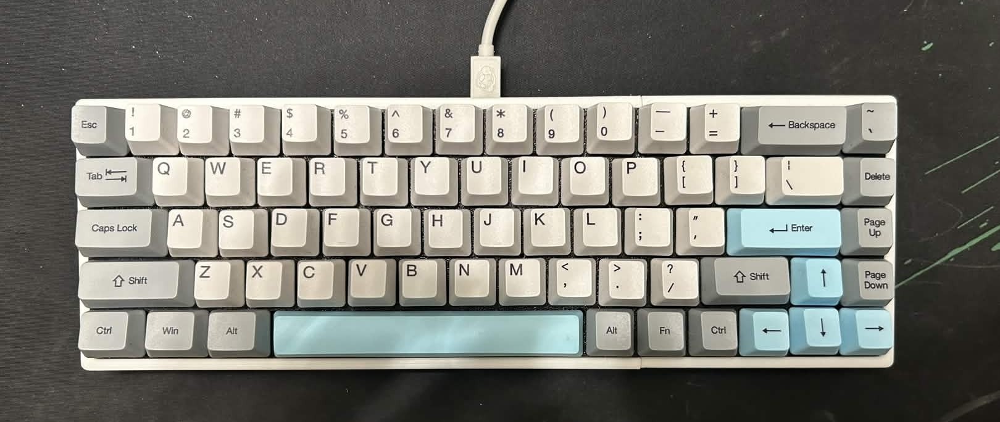
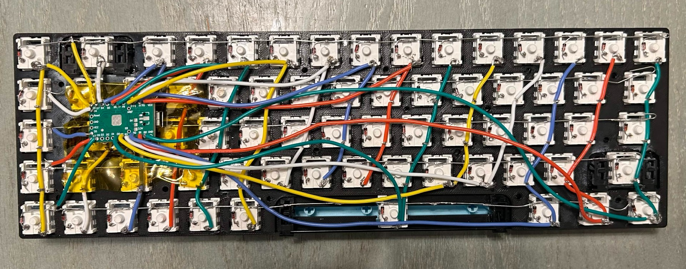
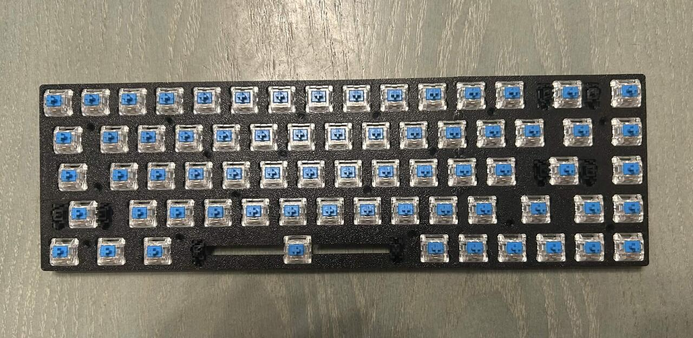
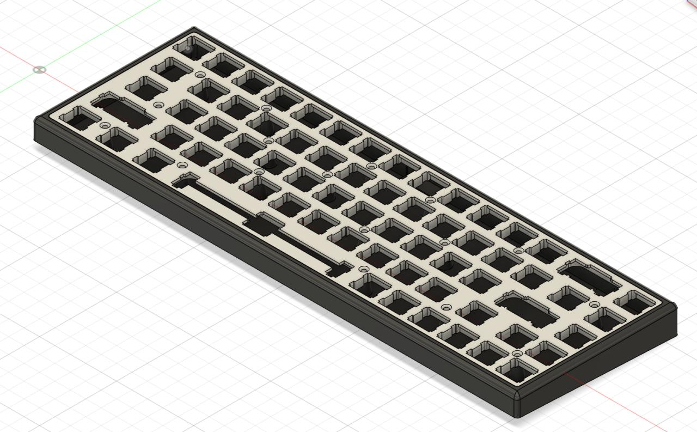

Mar. 2026 - Apr. 2026
Custom-Built Keyboard w/ Mechanical Switches
A 65% mechanical keyboard built entirely by hand. Every switch is soldered into a diode matrix on a 3D-printed plate, driven by a Teensy 2.0 running QMK, and closed up in a case I designed and 3D-printed myself.
S1 · Overview
Most custom keyboards start from a kit containing a premade PCB, a plate, and a case that all bolt together. I wanted to understand the layer underneath everything, so I built this one from raw switches, wire, and diodes instead of a board. The result is a 65% layout with 68 mechanical switches, hand-wired into a row-column matrix, running fully custom QMK firmware, and enclosed in a case I modeled myself on Fusion 360.
The build breaks down into four stages that mirror how the project actually happened: wiring the matrix, populating the switch plate, configuring firmware, and designing the enclosure around the finished plate.

Finished build - 65% layout, blue keycap set, hand-wired matrix hidden underneath.
S2 · Circuit Design — Diode Matrix
With no PCB to route the switches, every row and column connection has to exist as an actual wire. Each switch has a 1N4148 diode soldered directly to one leg, oriented consistently across the whole board. This diode was chosen because of its N-Key Rollover which allows keys to be pressed simultaneously without ghosting, and its low forward voltage drop which keeps the matrix voltage high enough to be read by the Teensy.
The rows are soldered together switch-to-switch along one leg, and the columns are soldered along the other leg in the perpendicular direction, so the matrix can be scanned as an N×M grid instead of needing a dedicated line per key. I color-coded the wire runs by column so the matrix stayed traceable when something went wrong.
All matrix lines terminate at a Teensy 2.0 mounted in the center of the board, which handles the row/column scanning and reports keypresses to the host over USB HID.

Hand-wired diode matrix - each switch leg carries a 1N4148 diode (200mA), with row/column runs feeding into the Teensy 2.0.
S3 · Switch Plate & Assembly
The switches sit in a 3D-printed plate that holds each one rigidly in place before soldering, keeping the whole matrix aligned while the wiring goes in underneath. I populated the board with clicky blue switches throughout, chosen for tactile and audible feedback over the silent alternatives.
Populating the plate came before wiring; every switch was clipped into its cutout first, then the matrix was built switch-by-switch on the underside, which kept the plate itself acting as a wiring jig throughout assembly.

Plate fully populated with switches prior to matrix wiring, the plate doubles as an alignment frame during soldering.
S4 · Firmware
The board runs QMK firmware, with a custom keymap and matrix definition written to match the exact row/column pinout used during wiring - since there's no standard PCB to reference, the firmware's matrix layout had to be derived directly from how I actually ran the wires.
QMK's layer system adds a function layer on top of the base 65% layout, covering media controls and arrow-key duplicates that don't fit on a board this size without added layers. Flashing is done over the Teensy 2.0 through QMK Toolbox.
S5 · Enclosure
The case was modeled from scratch on Fusion 360 to match the plate's exact switch spacing and outer dimensions, with a raised lip around each switch cutout and an internal cavity sized to clear the diode matrix and Teensy 2.0 underneath. A center cutout along the spacebar row provides access for the stabilizer wire.
It was designed as a single top shell with individual switch openings, 3D-printed to fit the populated plate directly.

CAD model of the case - switch cutouts and internal clearance modeled directly from the populated plate.